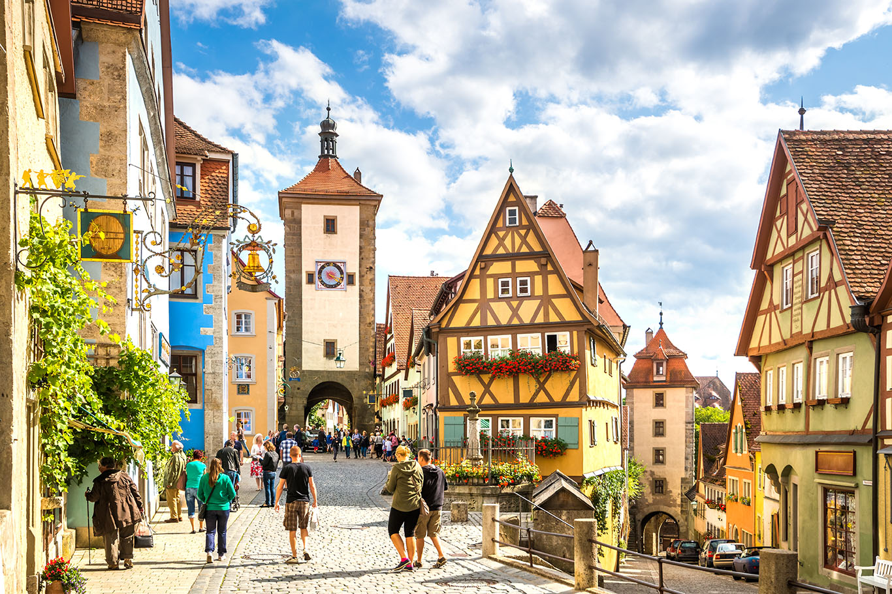
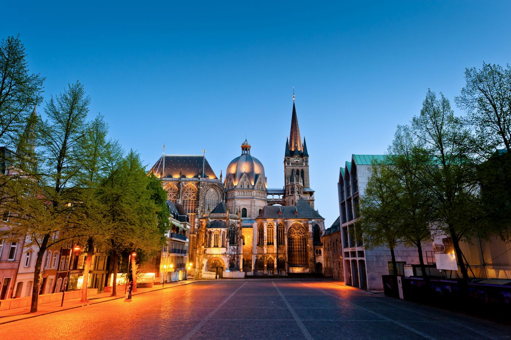
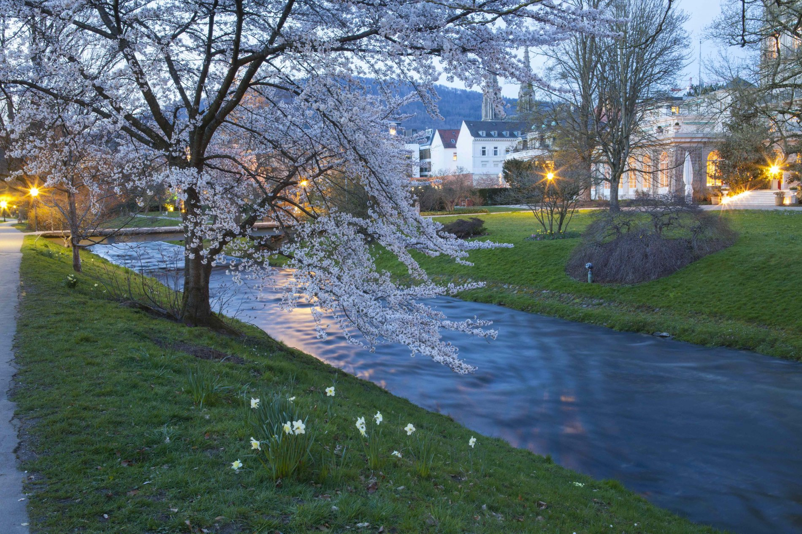
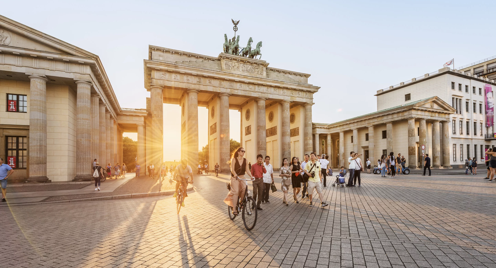
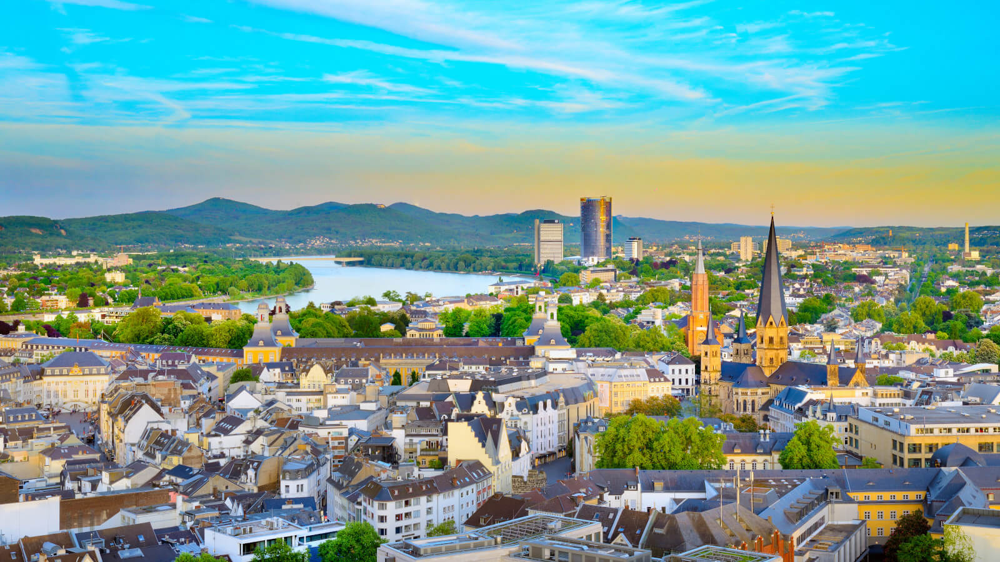
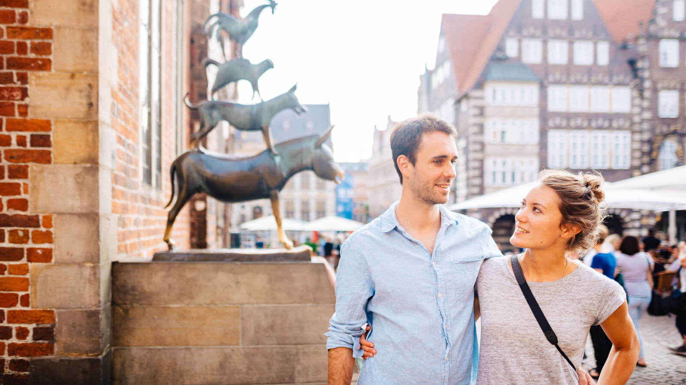

Deutschland einfach freundlich
Erleben Sie das Reiseland Deutschland

Eine der schönsten Städtereisen in Deutschland führt ins bayerische Rothenburg ob der Tauber
Städte & Kultur
In Deutschland warten mehr als 10.000 Städte zwischen Nordsee und Alpen darauf, von Ihnen entdeckt zu werden. Dabei hat jede ihren ganz eigenen Charakter und begeistert mit unvergesslichen Highlights.
Aachen

Aachen ist eine Stadt, die Europa lebt und fühlt. Sozusagen ein Europa im Kleinen: Zentral in einem Dreiländereck gelegen und seit Karl dem Großen auf vielfältige Weise den geistigen Wurzeln, Werten und Idealen des Kontinents verpflichtet.
Wahrzeichen und Monument früher europäischer Größe ist der Aachener Dom. Schon um das Jahr 800 war er der erste Dom Nordeuropas und über Jahrhunderte die Krönungskirche fast aller deutschen Könige. Seine Schatzkammer birgt den
bedeutendsten Kirchenschatz nördlich der Alpen. Kein Wunder also, dass beides Glanzpunkte der historischen Route durch die Stadt sind. Sie führt an einer ganzen Reihe herausragender Gebäude entlang. Jede Station der Route behandelt
ein eigenes Thema: Geschichte, Wissenschaft, Europa, Religion, Macht, Wirtschaft und Medien. Fast ist man versucht, eine Station „Pferdesport“ zu vermissen: Der jährliche Aachener Concours Hippique International Officiel (CHIO)
ist immerhin eines der bedeutendsten Pferdesportturniere der Welt.
Baden-Baden

Europas Sommerhauptstadt während der Belle Époque und heute weltweit bekannt als Bäder- und Kulturstadt von erstklassigem medizinischem Ruf: Baden-Baden. Mit ihren glanzvollen Festen, ihrer Eleganz und den milden Temperaturen bietet
sie von allem nur das Beste.
Wunderschön gelegen am Fuße des Schwarzwalds, bildet Baden-Baden den denkbar stilvollsten Rahmen für jedes Kultur- und Gesundheitsprogramm. Aus 12 Quellen und einer Tiefe von 2.000 Metern sprudelt das 68 °C heiße Quellwasser und
verwöhnt Gäste aus aller Welt. Außerdem wird es für unterschiedliche Therapien genutzt.
Berlin

Das Leben kommt langsam zurück nach Berlin. Es muss nicht immer der Großstadttrubel mit seinen klassischen Hotspots sein, denn die Hauptstadt bietet auch viele Möglichkeiten für Outdooraktivitäten.
Wer Berlin sagt, denkt wohl zuerst an das Brandenburger Tor, das wohl berühmteste Bauwerk der Hauptstadt. Jahrzehntelang Symbol der Teilung, aber auch Mittelpunkt einer zu allen Zeiten quirligen Metropole voller Ideen, Impulse,
Kunst, Kultur und Kreativität. Der Kurfürstendamm, Inbegriff des eleganten Stadtboulevards, wunderbare Bürgerviertel und schicke Galerien prägen den Westen der Stadt. Und natürlich das berühmte Nachtleben.
Bonn

Bis 1990 Hauptstadt der damaligen Bundesrepublik Deutschland und heute selbstbewusste Wirtschafts- und Kulturmetropole von internationalem Rang: Das idyllisch am Rhein gelegene Bonn präsentiert sich Besuchern weltoffen und umtriebig
wie eh und je.
Bremen

Bremen hat viele Gesichter. Die Hansestadt ist das pulsierende Herz Nordwestdeutschlands und Heimat der weltberühmten Bremer Stadtmusikanten. Eine Großstadt mit vielen Facetten, wo sich Geschichte, Tradition, Wissenschaft, Natur und Kultur zu einem faszinierenden
Gesamtbild vereinen.